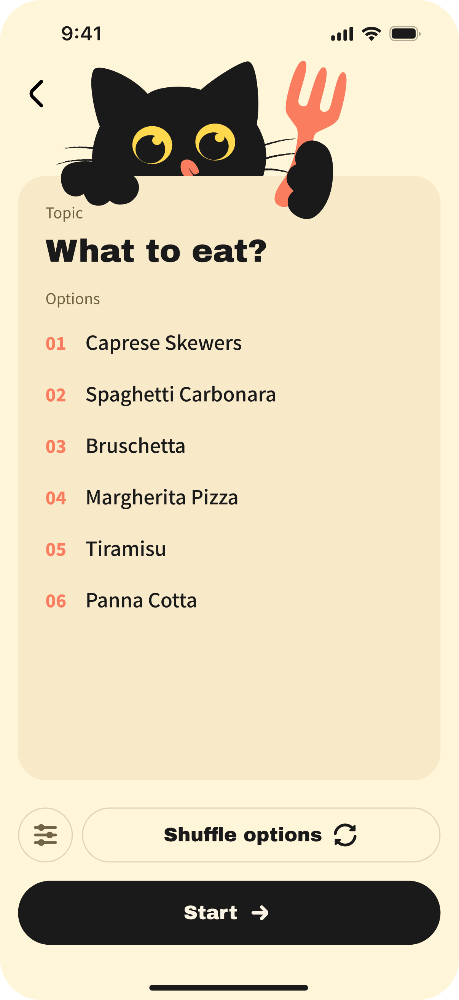

Scene 01
Get dinner moving.
For dinner, takeout, or a meal with friends, the hard part is often that every option is acceptable. Built-in food choices lower the starting cost and can still be adjusted to taste.
- Preset food options reduce blank-page work.
- Useful for group meals, takeout, and weekday dinners.